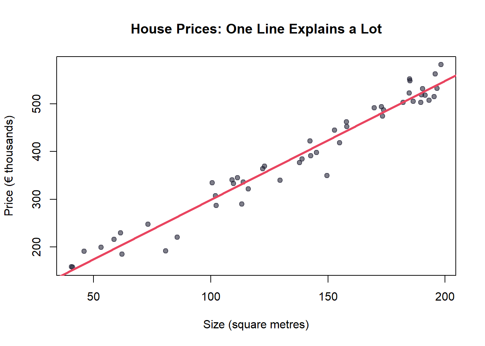

Why Statistics Matters Before You Touch Machine Learning
foundations
machine-learning
Everyone wants to build AI. But the real superpower isn’t knowing which algorithm to use — it’s understanding why it works.
Author
Godwil
Published
February 10, 2026
The rush to the algorithm
Did you know?
The term “regression” comes from Francis Galton’s 1886 study on the heights of parents and children. He noticed that tall parents tended to have slightly shorter children, and short parents had slightly taller ones — they “regressed” toward the average. The name stuck, even though modern regression has nothing to do with shrinking.
There’s a pattern I see everywhere. Someone discovers machine learning, gets excited, installs scikit-learn or tidymodels, runs a random forest on a dataset, and gets 94% accuracy. Amazing! Ship it!
But then someone asks: “Why did your model predict that?” And the answer is… silence.
This is what happens when we skip the foundation. Machine learning is not magic — it’s statistics at scale. And if you don’t understand the statistics beneath the algorithm, you’re building on sand.
What “beneath” actually means
Every machine learning model you’ve ever heard of is built on statistical concepts that have existed for decades:
Linear regression (1800s) → Neural networks are layers of linear regressions with activation functions stacked on top.
Bayes’ theorem (1763) → The entire field of Bayesian machine learning, spam filters, and medical diagnosis models.
Matrix multiplication (1850s) → Literally how your data flows through every neural network.
Probability distributions (1700s) → How models quantify uncertainty, make predictions, and learn from data.
The “AI revolution” isn’t new math. It’s old math with new computers.
A simple example
Let’s say you want to predict house prices. A machine learning tutorial might tell you to throw your data into XGBoost. But what’s XGBoost actually doing?
At its core, it’s fitting a sequence of simple models (like decision trees) where each new model tries to fix the mistakes of the previous ones. The “mistakes” are measured using a loss function — which is a statistical concept. The way it finds the best split in a tree? Variance reduction — another statistical concept.
Let’s see this with the simplest possible model — a straight line:
Code
# Generate some example dataset.seed(42)n <-50square_metres <-runif(n, 40, 200)price <-50000+2500* square_metres +rnorm(n, 0, 25000)# Fit the simplest modelmodel <-lm(price ~ square_metres)# Plotplot(square_metres, price /1000,pch =19, col ="#1a1a2e90",xlab ="Size (square metres)",ylab ="Price (€ thousands)",main ="House Prices: One Line Explains a Lot",family ="sans", cex.main =1.2)abline(model$coefficients[1] /1000, model$coefficients[2] /1000,col ="#e94560", lwd =3)

Figure 1: A simple linear regression — the foundation beneath complex models
That red line? That’s y = mx + b — something you learned in school. It’s also the building block of neural networks with millions of parameters. The only difference is scale.
What this blog will cover
Over the coming weeks, we’ll build your statistical intuition from the ground up. Each post will focus on one concept, explained so that:
You understand the why, not just the how
You can explain it to someone at a dinner party
You see how it connects to the AI/ML topics you care about
TipKey Takeaway
Machine learning is statistics at scale. Understanding the foundations doesn’t slow you down — it’s what separates someone who uses tools from someone who builds with them.
Coming next week
What Data Actually Is — types, distributions, and why the shape of your data matters more than the algorithm you choose.
Found this useful? Share it with someone who’s jumping into ML without the foundations. And follow along — we publish every week.